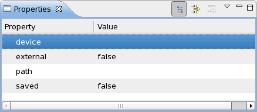
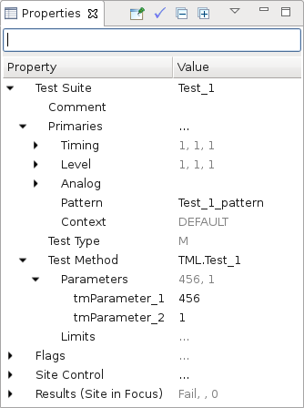
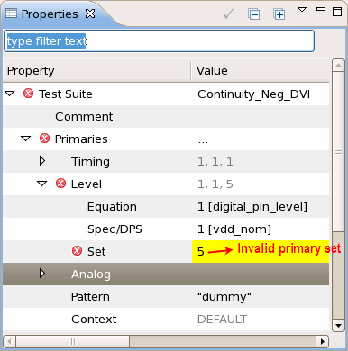
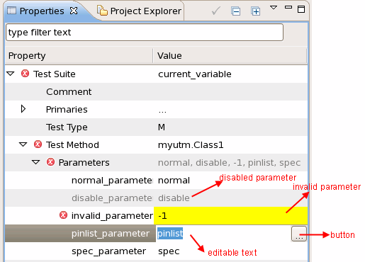
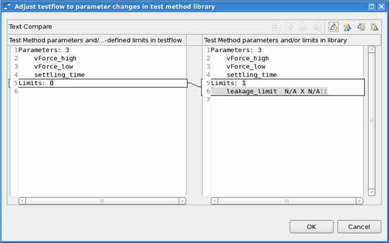

Testflow Properties view
The Properties view is part of the Testflow and other tools.
When you select the testflow item in the Test Program Explorer, the Properties view shows the information of the current testflow.

When you choose a test suite, bin, group, flow control node, Assign Value node, or Print node in the testflow, this view displays that element's settings and you can edit them.
Test suite properties view
 |
The test suite properties view shows all properties of the test suite that is currently selected in the Flow Sequence Editor. |
- Test Suite
Shows the comment, the primary settings, the test type and the test method used in this test suite. You can modify all these settings except the test type.
- Flags
Shows the settings of all the test suite flags. You can modify the settings of the test suite flags.
- Site Control
Controls the multi-site test sequence of this test suite.
- Site Match controls the site match function of the test suite.
- Allow Parallel controls whether the parallel execution of the test suite is allowed. If you do not check the option Allow Parallel, all the sites will be excuted in serial and the site control settings below will not work.
- Site Control controls the
multi-site execution mode of the test suite. It can be
PARALLEL, SERIAL,
SEMIPARALLEL, OTHER or
UNDEF.
The parameters Size and Cycle are only useful if you choose to execute the sites in SEMIPARALLEL mode. Refer to Expanded Site Control window for the details of these parameters.
The execution sequence (#1, #2, #3, #4) applies only for the OTHER mode. You can specify the site number in the text editor after the execution sequence. The test suite of different sites will be executed serially or semi-parallel in the order of the execution numbers that you specify in #1, #2, #… .
UNDEF is used by default when you create a test suite. If you Do not change it, the test suite of different sites will be executed serially or parallel according to whether it is implemented serially or parallel in the test method.
Note You can set the modes OTHER and UNDEF in the Testflow Properties view only. You cannot set them in the Expanded Site Control window.
- Results(Site in Focus)
Shows the test results of the site in focus.
Invalid primary set display
The invalid primary set will be displayed with a yellow background and a warning icon, if you select the Automatic Validate Setups checkbox in the Test Suites preference page.

Universal test method parameter display and modification
Universal
test method parameters have three properties. They can be valid
or invalid, enabled or
disabled, visible or
invisible.
- If a parameter is set to be
invalid, it is displayed with a yellow background and a warning icon in the Properties view. - If a parameter is set to be
disabled, it is grayed out in the Properties view. - If a parameter is set to be
invisible, it is not displayed in the Properties view.
The invisible property overrides the invalid
and disabled properties. The disabled property
overrides the invalid property.

invalid, disabled or
invisible.To modify a parameter value, you can type
in a value directly or select a value from the defined options. For parameters of
SpecVariable, SpecValue, or
PinString, you can also select a value from the defined spec
variables and pins by clicking the ... button.
Test method parameter and limit inconsistency check
If you modified the parameter or limit definition of a test method which is used by a test suite, the Properties view will be grayed out after you build the test method. The Inconsistency Check button will be enabled.

Click the Inconsistency Check button, check the changes of parameters or limits and click OK. The changes of parameters or limits in the test method will be reflected in the Properties view.

Functional changes
- Introduced before SmarTest 6.3.2
- SmarTest 6.5.0: Parameter property is displayed in Testsuite view.
- SmarTest 6.5.2: Properties view replaces Testsuite view.
- SmarTest 6.5.3: The function of choosing which items can be shown in the Properties view is removed.